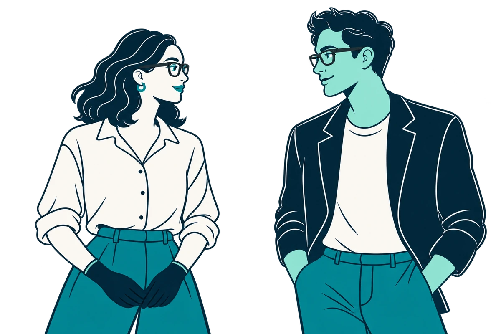
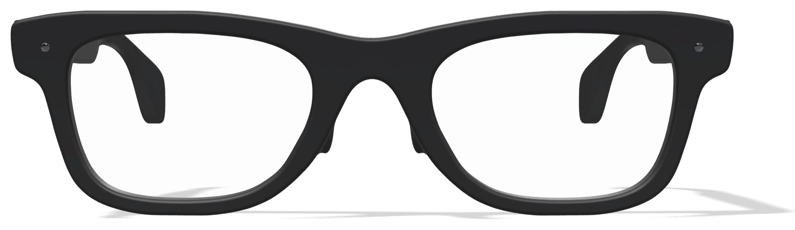

Make room for the other person’s voice.
We want to explore speech as captions in glasses, so attention could stay with the person in front of you.
Fictional everyday phrase
“Shall we meet here tomorrow?”
We explore how technology could support communication between Deaf signers and hearing people, with more freedom to share, take part and connect.

Only the idea exists. No prototype, interviews, tests, users, revenue or confirmed partnerships.
Everyone has something to contribute. We want to explore support that respects people’s autonomy and makes more room for connection.
Situations that motivate the project, not testimonials or findings from research.
We imagine gloves and glasses that could support both directions of a conversation, without holding or positioning a phone. For now, an idea to investigate.
We want to explore speech as captions in glasses, so attention could stay with the person in front of you.
“Shall we meet here tomorrow?”
Gloves could contribute manual information. Facial expression, the body and space also carry meaning: gloves alone cannot translate a whole sign language.
How to capture the other information, and how the system would work, remain research questions.
What would we need to understand?
Capture and architecture unresolved
A first hypothesis: explore sensors and feedback through a possible LSE practice tool with teachers and adult learners. A limited experiment to learn what helps.
It would not demonstrate translation of natural conversations. That needs its own research.
Read the research boundariesSelected exercises · scope to define
Questions and exercises would be chosen with teachers and adult learners.
Communication is the purpose.Learning is a first hypothesis.
The first step would be to listen and decide with people what is worth investigating. This plan has not started yet.
Co-design with Deaf signers and hearing people: which situations matter, and what support would be useful and acceptable?
Compare gloves and glasses with cameras, phones and existing resources: autonomy, comfort, calibration, cost and accessibility.
If justified, select a few exercises with teachers and explore off-the-shelf sensors. Assess feedback with different adult learners.
Evidence should guide us, even if it means rethinking the idea or leaving the hardware behind.
Sign languages also use facial expression, the body and space. Inertial sensors alone cannot be assumed to establish hand position relative to the body. Sensors and system architecture are still to be explored.
Only whether selected measurements and teacher-verified feedback might be useful in a limited learning context. Beginner practice data would not establish natural-conversation translation; that requires separate research with competent signers.
Spanish Sign Language (LSE) is a proposed first scope, not a universal sign language. The exercises, user needs, teaching-centre interest and value of gloves over alternatives all need their own validation.
A complementary practice tool, with exercises to select with teachers. Adult learners are potential users; teaching centres are possible collaborators and buyers. No recognition, scores or linguistic corrections have been validated. This would not establish a route to natural-conversation translation.
Computing, business and transmedia. Two ways of approaching the same challenge, with a shared desire to learn.
Student of Computer Science and Business Administration at Universidad Carlos III de Madrid (UC3M).
LinkedInBachelor’s degree student in Design and Management of Transmedia Projects at CSEU La Salle.
LinkedInWith contributions from two student collaborators during ideation.
Santiago is applying to Xiji to broaden his knowledge and international experience, discover China’s entrepreneurial ecosystem, and understand how hardware development and access to components and suppliers could help investigate SENVA.
The goal: ask better questions, test the idea and choose a meaningful first experiment.
Application context. No admission, affiliation, endorsement or supplier commitments are implied.
Ideas grow through conversation. If you have a question or a perspective to share, find us on LinkedIn.